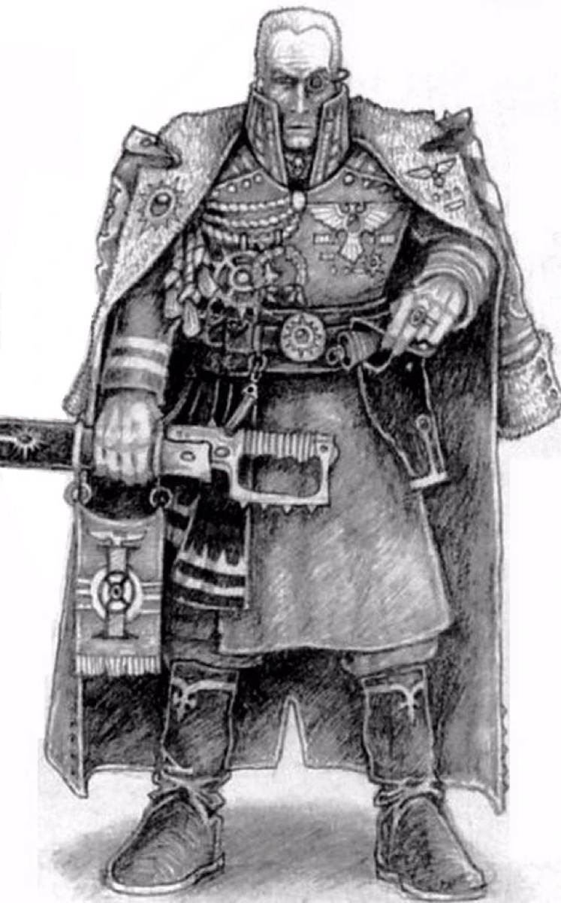

Imperial Navy
| Imperial Navy Navis Imperialis | |
|---|---|
The winged pillar of the Imperial Navy, as it appears on fleet standards and command-deck hololiths Artwork © Games Workshop | |
| Type | Void fleet of the Imperium |
| Formed | As part of the Excertus Imperialis, c. 798.M30; made a separate service in the Time of Rebirth |
| Parent body | Adeptus Terra |
| Leadership | Five Lord High Admirals, one for each of the Segmentae Majoris |
| Representation | A Lord High Admiral may hold a seat among the High Lords of Terra |
| Principal fleets | Battlefleets Solar, Obscurus, Pacificus, Tempestus and Ultima, divided into sector battlefleets |
| Also called | The Holy Fleet (in Ecclesiarchy usage) |
| Chief vessel classes | |
| Battleships, grand cruisers, cruisers, ironclads, escorts | |
| Symbol | A pillar between two wings, raised over a toothed wheel |
The Imperial Navy, or Navis Imperialis, is the void fleet of the Imperium of Mankind. Its ships patrol the Warp routes, escort the convoys that carry the tithe, carry the regiments of the Astra Militarum to their wars and give them orbital cover when they arrive. Each sector has a battlefleet of its own, normally between fifty and seventy-five capital ships with escorts and support craft, and the five fleets of the great segmentae are headed by the Lord High Admirals. The Navy does not control the stars, which no force in the Imperium could do, but it holds the lanes by which the Imperium is joined together.[1]
The Navy was born in the Great Crusade, when the fleets that carried the Space Marine Legions and the armies of the Emperor were the first expression of Imperial power in the void. In its present form it dates from the reforms that followed the Horus Heresy (c. 015–021.M31), when the ships were separated from the ground forces and placed under a distinct service. It has been kept distinct ever since. An admiral cannot order an army, a general cannot order a ship, and both are deliberately made dependent on the other.[2]
The Navy is also bound closely to the Navis Nobilite, the Navigator houses without which no ship can cross the Warp. Every vessel of the fleet carries at least one Navigator, and the Navy's fate is tied to theirs. In the early 42nd millennium that dependence has become a source of fear as well as strength, for the darkness of the Noctis Aeterna showed how quickly a fleet fails when its pilots cannot see their way.[3]
History
[edit]The fleets of the Great Crusade
[edit]
The Great Crusade could not have been fought without ships. A single Legion needed hundreds of vessels to move its warriors, its armour and its auxiliaries, and the great expeditionary fleets that went out from Terra in the late 30th millennium numbered hundreds, sometimes thousands, of hulls. The first of them were built in the orbital foundries of Terra and in the Ring of Iron about Mars, under the eye of the Emperor and the forge-wrights of the Mechanicum, and later at the shipyards of Saturn, Voss, Grulgarod and Cypra Mundi, which grew in time to rival Mars itself. Without the alliance sealed in the Treaty of Olympus the whole undertaking would have been impossible.[4]
During the Crusade the fleets and the armies were a single service. The Excertus Imperialis, the Imperial Army, held the ground regiments and the ships assigned to them, and the whole was commonly called the Armada Imperialis. A regiment's colonel commanded both his troops and the cruiser that carried them, which made a ship a self-contained force and limited the damage should it be lost in the Warp. The Legions had fleets of their own, built to the taste of their primarchs: the black raiders of the Raven Guard, the crimson and gold cruisers of the Blood Angels, the unadorned siege-barques of the Iron Warriors.[5]
Far ahead of the main expeditions went the Rogue Traders Militant. They were often former rulers of the realms the Emperor had cast down, who were offered the choice of kneeling or dying and who chose to take his Warrant of Trade. They scouted the unmapped dark with their own fleets, and they were forbidden to come home. Many vanished alone. Some, in their last decades, returned fleets of ramshackle ships that included captured xenos hulls and vessels of unknown origin, and their descendants founded the Rogue Trader dynasties of the later Imperium.[1]
The Great Crusade also recovered ships that the Mechanicum could not build. The Terminus Est, the Nicor, the Mirabilis and the Phalanx are all said to be relics of an older age, and no forge has succeeded in copying them. Their patterns, and those of the first ships of the line, passed into the fleets of the later Imperium and gave the Navy its inheritance of designs.[1]
The anchorage fleets
[edit]As the Crusade reached the Eastern Fringe the Imperium formed fleet anchorages at points on and near its borders, with at least one in each of the great segmentae. These were base ports from which permanent armadas could patrol and respond to sudden threats. They were composed largely of the Imperialis Auxilia, and their admirals answered to Terra and not to any primarch. When the Heresy began the anchorage fleets proved less open to the Warmaster's agents than the expeditionary armies, and the Port Maw Armada, though made the target of repeated subversion, remained for the most part loyal. Where its ships did defect, it was commonly through a polluted officer cadre or a mutiny by a minority.[4]
The Horus Heresy
[edit]The Heresy broke the old system. Almost every Army regiment attached to a Traitor Legion followed it into rebellion, and the ships under the regiments' command went with them. Officers of the Army who answered to no Legion used the ships that carried them to carve out private empires from the chaos, and a good part of the Imperium's long reconquest was spent undoing their work. The loyalty of the anchorage fleets, which had been raised to defend and not to conquer, was one of the few firm points the Loyalists could rely on.[4]
The Reformation
[edit]After the Siege of Terra, Roboute Guilliman and the surviving leaders of the Loyalists remade the Imperium. The Navy was made a service of its own. By the Tactica Imperium the link between the ground armies and the fleet was cut. An officer of the Astra Militarum could no longer command a ship, and an admiral had no authority over the regiments he carried. Fleets were divided among the five segmentae and into battlefleets for each sector, a structure that has lasted ten thousand years.[2]
Before he was interred, the Emperor himself is said to have decreed that starships should be commanded only by officers of their own service. The decree is cited in the Navy's articles of command, though no copy has been found in the Palace archives.[1]
Ten thousand years
[edit]The Navy's ships have fought on every front. Battlefleets hold the lanes about the Eye of Terror, escort the tithe fleets and defend the worlds of the Imperium against the raiders that prey on them. The greatest naval war of the later Imperium was the Gothic War of 139.M41, in which Battlefleet Gothic was assailed by the fleets of Abaddon's Twelfth Black Crusade. The Navy drove the Despoiler's fleets from the sector at great cost, though Abaddon carried away a captured Blackstone fortress that he later hurled against Cadia.[6]
The Navy also fights in the shadow of the Warp. In the Age of Apostasy fleets were cut off for generations by the Warp storms, and in the Era Indomitus the opening of the Great Rift and the loss of the Astronomican for a time left many ships lost or stranded. The fleets of the Indomitus Crusade have fought through storms that wrecked whole battlefleets.[3]
Organisation
[edit]Segmentae and battlefleets
[edit]The Imperium is divided into five great fleet zones, the Segmentae Majoris: Solar, Obscurus, Pacificus, Tempestus and Ultima. Every ship of the Navy belongs to one of them and answers to the Lord High Admiral of that segmentum. The Lord High Admiral of the Segmentum Solar holds the oldest and most senior post, and he may sit among the High Lords of Terra. Each segmentum has a Segmentum Fortress as its base. The fortress is under the control of an official of the Administratum, the Master of the Segmentum, who reports to the Master of the Administratum, and not to the admiral.[1]
Each segmentum is divided into sectors, and each sector has a battlefleet, named for the sector it guards. Battlefleet Gothic is in the Gothic Sector, Battlefleet Cadia was in the Cadian Sector, and Battlefleet Solar guards the Sol System itself. A battlefleet is commanded by a Lord Admiral. It is divided into battlegroups of one or two cruisers with a squadron of escorts, which patrol independently, and a larger force can be formed by concentrating several battlegroups.[1]
Ranks and crews
[edit]
The Navy's officers are commissioned from the noble and military families of the Imperium. Beneath them are warrant officers, the ratings and a great mass of indentured workers, conscripted or bonded for life to the ships. Most are drawn from the same recruitment pools as the regiments of the Astra Militarum. The crew of a large ship numbers in the tens of thousands, and its lower decks hold generations of families that have never been planetside. The Commissariat supplies political officers to the Navy as it does to the Guard.[1]
Vessels and weapons
[edit]
The Navy's ships are many kilometres long and built like cathedrals, with armour concentrated at the prow and rank upon rank of gun decks along the flanks. The great majority are of patterns that were old before the Heresy. The ships fall into five broad classes.[6]
| Class | Role | Examples |
|---|---|---|
| Battleship | Flagships and ships of the line, armed with massed weapon batteries and carrying large fighter wings | Emperor, Retribution, Oberon, Apocalypse |
| Grand cruiser | Heavy cruisers used as the backbone of a battlefleet | Vengeance |
| Cruiser | The workhorse of the fleet, built in many patterns | Lunar, Dominator, Dictator, Gothic, Tyrant |
| Ironclad | Slow, heavily armoured ships for planetary assault | Armageddon |
| Escort | Frigates and destroyers for screening and pursuit | Sword, Cobra, Firestorm, Hunter |
The ships' principal weapons are macro-batteries, which fire great volumes of heavy shells, lances, which fire beams of focused energy through enemy shields, and torpedoes, which strike shields at close range. The largest cruisers and battleships may carry a nova cannon, which fires an enormous explosive shell over many thousands of kilometres. Defences are void shields, which absorb fire until overloaded, and thick armour. Warp travel is guarded by the Geller field that wraps each ship and by the Navigator, whose Warp Eye finds the path.[6]
The Navy's fighters and bombers fly from carriers and from the flight decks of larger ships. Fury interceptors and Starhawk bombers are the common craft of the void, and atmospheric craft of the Navy, from Thunderbolt fighters to Marauder bombers, support the regiments of the Astra Militarum from their airfields. Crews pass most of their short lives in these craft, and their losses are accounted for in the monthly tithe.[1]
Relations with other institutions
[edit]- Navis Nobilite
- The Navigator houses provide every ship with its Warp pilot. The Navy depends on them and cannot discipline them, and their price rises in proportion to the Navy's need.
- Astra Militarum
- The two services are partners and rivals. The Navy carries the Guard and covers its landings, and neither can fight a war without the other.
- Adeptus Mechanicus
- The shipyards of the forge worlds build the Navy's ships and keep their machine spirits content. The Mechanicus also holds the knowledge of the oldest patterns, and sets its own price for refits.
- Ecclesiarchy
- On many worlds the Navy is called the Holy Fleet, and its ships are blessed on launch by the priests of the Imperial Cult. The Ecclesiarchy teaches that the light of the Astronomican that guides the fleet is the light of the Emperor.
- Rogue Traders
- The Rogue Traders are the descendants of the Great Crusade's scouts and carry the Warrant of Trade. They operate independently, and the Navy does not command them, though it often asks them for help.
Timeline
[edit]| Date | Event |
|---|---|
| c. 798.M30[a] | During the Great Crusade, the expeditionary fleets of the Armada Imperialis carry the Legions and the armies. The Rogue Traders of the early expeditions scout the unmapped dark. |
| 005–014.M31 | During the Horus Heresy, the Army regiments attached to the Traitor Legions defect with their ships, and officers of the Army carve out private empires. |
| 005.M31 | The loyal anchorage fleets, among them the Port Maw Armada, remain largely loyal when the Heresy begins. |
| c. 013.M31[b] | The Emperor is said to decree that starships be commanded only by officers of their own service. |
| c. 015–021.M31[c] | After the Siege, the Navy is made a service of its own, and its fleets are divided among the five segmentae and into sector battlefleets. |
| M32 | The Tactica Imperium cuts the link between the ground armies and the fleet, and the Astra Militarum is formed separately. |
| M36 | During the Age of Apostasy, fleets are cut off for generations by Warp storms. |
| 139.M41 | The Gothic War is fought against the fleets of Abaddon's Twelfth Black Crusade, and the Navy drives the Despoiler's fleets from the sector. |
| rev. 990.M41 | The Navis Imperialis Registry is revised. |
| 999.M41 | The opening of the Great Rift and the loss of the Astronomican leave many ships lost or stranded. |
| c. 001.M42[d] | The darkness of the Noctis Aeterna shows how quickly a fleet fails when its Navigators cannot see their way. |
| c. 012.M42[e] | The fleets of the Indomitus Crusade fight through Warp storms that wreck whole battlefleets. |
See also
[edit]Notes
[edit]- ^ Estimated; no record gives an exact year.
- ^ Estimated; no record gives an exact year. The decree is recorded only in the Navy's articles of command.
- ^ Estimated from the sequence of events, after the Siege of Terra.
- ^ Estimated; no record gives an exact year.
- ^ Estimated; no record gives an exact year.
References
[edit]- ^ a b c d e f g h Abnett, Dan. Double Eagle (novel). Black Library. Bayley:, Barrington J.. Eye of Terror (novel). Black Library.
- ^ a b Rennie, Gordon. Execution Hour (novel). Black Library. Abnett, Dan. First and Only (novel). Black Library.
- ^ a b Williams, Richard. Relentless (novel). Black Library. Rennie, Gordon. Shadow Point (novel). Black Library.
- ^ a b c Warhammer 40,000 Rulebook (Digital Edition) (7th Edition), pp. 275, 285, 298, 308, 331-332. Games Workshop. Warhammer 40,000 Rulebook (6th Edition), pp. 180-181. Games Workshop.
- ^ Warhammer 40,000 Rulebook (5th Edition), pg. 124. Games Workshop. White Dwarf 119 (US), "Battlefleet Gothic: Concept Art," by Jes Goodwin, pp. 29-31.
- ^ a b c Citadel Journal 38, "Severed Dreams: Campaign - Euripedes IV attempts to secede from the Imperium," pp. 4-9. Imperial Armour Volume One - Imperial Guard & Imperial Navy, pp. 216-249.